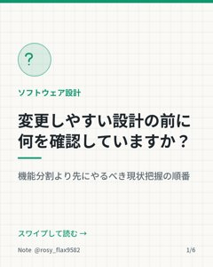
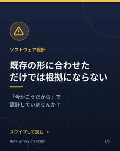
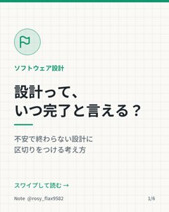
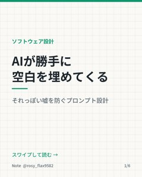

ソフトウェア設計のNote
動画で紹介した記事と本です。いちばん上が最新です。
11/15（日）
小さな変更の見積もりで痛い目に遭わないために整理していること
Noteで読む →

11/14（土）
設計の土台は、現状把握にある
Noteで読む →
11/13（金）
中身を読まなくても使える関数を作りたい
Noteで読む →
11/12（木）
V字モデルで「先を見る」とき、どこまで考えるか
Noteで読む →
11/11（水）
作業用はworkへ――資料の置き場所で混乱を減らす
Noteで読む →

11/10（火）
既存の形に合わせただけでは、設計の根拠にならない
Noteで読む →
11/9（月）
要件IDはどこで区切るか――同じ要求を3通りに分けて考える
Noteで読む →

11/8（日）
品質特性から考える「設計完了」の線引き
Noteで読む →
11/6（金）
一つのミスから影響範囲と原因をたどる
Noteで読む →
11/4（水）
フレームワーク上の変更は、全体図と変更表の二つで示す
Noteで読む →

11/2（月）
AIに無理やり答えを出させないための頼み方
Noteで読む →
10/30（金）
設計書がないとき、変更範囲から全体像をつないでいく
Noteで読む →
10/28（水）
設計書とコードで同じものを二度作らないために
Noteで読む →
10/26（月）
状態の名前だけでは見えない、情報が変わる契機と動きのつながり
Noteで読む →
10/24（土）
最初から「正しい設計」をしようとするから失敗する
Noteで読む →
Kindle本
Kindle+（旧 Kindle Unlimited）の会員なら無料で読めます。
『SOLID原則 実践ソフトウェア設計』
Amazonで見る →
『SOLID原則 C言語ソフトウェア設計』
Amazonで見る →
『デザインパターン C++ソフトウェア設計（第1冊）』
Amazonで見る →